Concurrencia
Existen dos cosas muy difíciles de hacer en Ciencias de la Computación:
- Poner Nombres a las cosas.
- La Concurrencia.
- Errarle por uno.
Imaginarse, por ejemplo, la escena de un hombre leyendo un libro en uno de los clásicos bares porteños. Seguramente el mismo tendrá su café, el matutino de su preferencia, su celular encima de la mesa y hasta tal vez comparta esa mesa con un amigo.
Hasta ahora se ha descripto la imagen en forma estática, pero si a esa imagen se le comienza a dar velocidad y ver lo que transcurre mientras esta persona lee el diario, si uno agudiza la vista, podrá notar que este sujeto no está llevando una sola operación a la vez.
Lee el libro, toma un sorbo de su café, un poco de agua, come un poco de su medialuna, mira la pantalla de su celular, intercambia unas palabras con su compañero de mesa y continua así por un rato.
Esta podría ser una buena metáfora para describir el concepto de Concurrencia.
Un detalle muy importante que hay que notar es que el individuo no está realizando todo en forma paralela, es decir lee, toma, charla, mira en el mismo tiempo infinitesimal ti, sino que las operaciones se están llevando a cabo a la vez. Esta sutil diferencia es la que hay que tener en cuenta respecto de la diferencia entre concurrencia y paralelismo.
{kind=link}
El mundo de la concurrencia se refiere a un conjunto de actividades que pueden suceder en el mismo tiempo. Anderson-Dahlin pag. 129.
El correcto manejo de la concurrencia es una de las claves en el desarrollo de los Sistemas Operativos Modernos. En este tema se verá cual es la abstracción que maneja y disminuye la complejidad del problema de la Concurrencia.
Uno de los aspectos más interesantes al enfrentarse con la Concurrencia, es la manera en que nuestra mente es capaz de atacar un problema:
-
En el caso de la mayoría de los programadores la forma más común de construir programas es la llamada forma secuencial: ejecutar una acción detrás de la otra. Estos es lo que la mayoría de los programadores realizan cotidianamente.
-
Pensar en atacar un problema en el cual decenas de eventos pueden desencadenarse al mismo tiempo es aún muy complejo…
Además, un problema de los seres humanos se encuentra en nuestra limitación para manejar distinta información al mismo tiempo Miller GA Magical Seven Psych Review 1955, según este artículo de Miller de 1955 los seres humanos podemos manejar 7+-2 chunks of data .
And finally, what about the magical number seven? What about the seven wonders of the world, the seven seas, the seven deadly sins, the seven daughters of Atlas in the Pleiades, the seven ages of man, the seven levels of hell, the seven primary colors, the seven notes of the musical scale, and the seven days of the week? What about the seven-point rating scale, the seven categories for absolute judgment, the seven objects in the span of attention, and the seven digits in the span of immediate memory?
El concepto clave es escribir un programa concurrente como una secuencia de streams de ejecución o threads que interactúan y comparten datos en una manera muy precisa. El concepto básico es el siguiente:
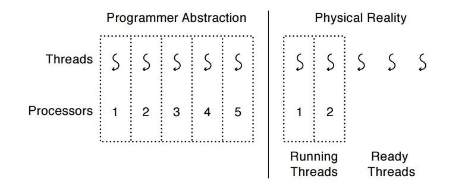
La abstracción
Un thread es una secuencia de ejecución atómica que representa una tarea planificable de ejecución
*. Secuencia de ejecución atómica: Cada thread ejecuta una secuencia de instrucciones como lo hace un bloque de código en el modelo de programación secuencial.
*. tarea planificable de ejecución: El sistema operativo tiene injerencia sobre el mismo en cualquier momento y puede ejecutarlo, suspenderlo y continuarlo cuando él desee.
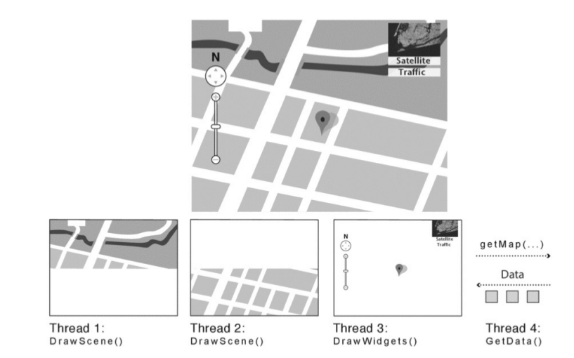
Threads vs procesos
Proceso: un programa en ejecución con derechos restringidos.
thread: una secuencia independiente de instrucciones ejecutándose dentro de un programa.
-
One thread per process: un proceso con una única secuencia de instrucciones ejecutándose de inicio a fin. Para los que vieron Pascal o C sería el equivalente a un bloque de intrucciones delimitado por begin-end o { }. Lo que todos los programadores de modelo secuencial conocemos.
-
Many thread per process: un programa es visto como threads ejecutándose dentro de un proceso con derechos restringidos. En dado un ti algunos threads pueden estar corriendo y otros estar suspendidos. Cuando se detecta por ejemplo una operación de I/O por alguna interrupción, el kernel desaloja (preempt) a algunos de los threads que están corriendo, atiende la interrupción, y al terminar de manejar la interrupción vuelve a correr el thread nuevamente.
-
Many single-threaded processes: limitación de algunos sistemas operativos que permitían varios procesos, pero cada uno con un único thread, lo que implica que puede haber varios threads ejecutándose en kernel model.
-
many kernel threads: para aprovechar recursos, también el kernel puede ejecutar varios threads en kernel mode.
Thread Scheduler
¿Cómo hace el S.O. para crear la ilusión de muchos threads con un número fijo de procesadores?
Obviamente es necesario un planificador de thread o threads scheduler, ya que el S.O. podría estar trabajando con un único procesador. El cambio entre threads es transparente, es decir que el programador debe preocuparse de la secuencia de instrucciones y no el cuando éste debe ser suspendido o no.
Por ende los Threads proveen un modelo de ejecución en el cual cada thread corre en un procesador virtual dedicado (exclusivo) con una velocidad variable e impredecible Anderson-Dahlin, pag 138.
Esto quiere decir que desde el punto de vista del thread cada instrucción se ejecuta inmediatamente una detrás de otra. Pero el que decide cuando se ejecuta es el planificador de threads o thread scheduler. Por ejemplo:
...
...
x = x + 1;
y = x + y;
z = x + 5y;
...
...
Entonces en base a lo antedicho, se pueden encontrar los siguientes escenarios de ejecución:
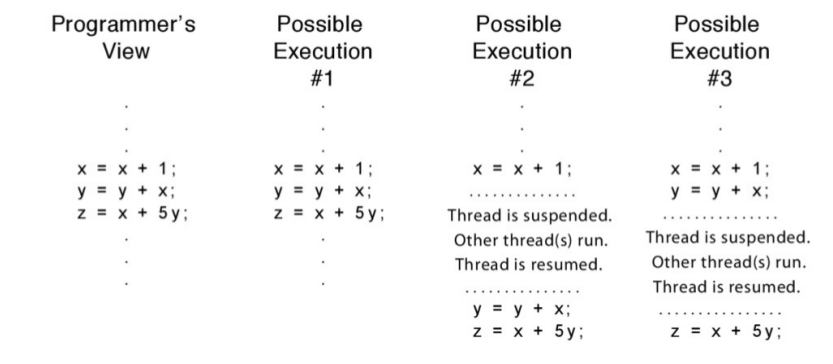
Y los siguientes interleaves pueden suceder, con estos distintos threads:
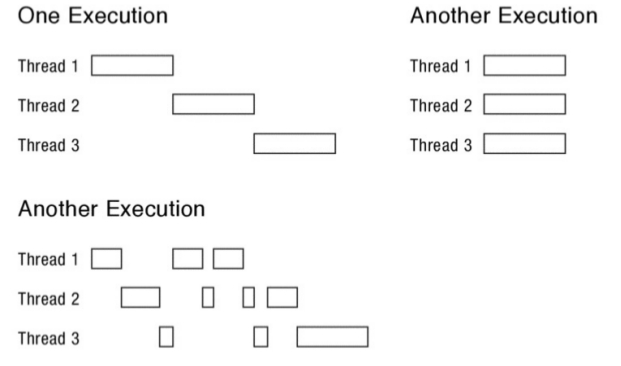
En la actualidad hay dos formas de que los threads se relacionene entre sí:
- Multi-threading Cooperativo: no hay interrupción a menos que se solicite. –> ¿Problemas?
- Multi-threading Preemptivo: Es el más usado en la actualidad. Consiste en que un threads en estado de running puede ser movido en cualquier momento.
El API de Threads
Para la programación utilizando threads se utilizará la biblioteca pthread donde la p es de POSIX Threads. El API de pthreads es muy completa y la iremos viendo a medida que se la necesite.
- Creación de un Thtread
#include<pthread.h>
int pthread_create(pthread_t * thread, const pthread_att_t * att,
void * (start_routine) (void *), void * arg)
Esta función tiene cuatro argumentos:
- thread: Es un puntero a la estructura de tipo pthread_t, que se utiliza para interactuar con el threads.
- attr: Se utiliza para especificar los ciertos atributos que el thread deberia tener, por ejemplo, el tamaño del stack, o la prioridad de scheduling del thread. En la mayoria de los casos es NULL.
- start_routine: Sea tal vez el argumento más complejo, pero no es más que un puntero a una función, en este caso que devuelve void.
- arg: Es un puntero a void que debe apuntar a los argumentos de la función.
devuelve 0 si se ha creado el thread con éxito, si hubo error devuelve otro valor.
Ejemplo básico de creación de un thread:
#include <pthread.h>
typedef struct __myarg_t {
int a;
int b;
} myarg_t;
void *mythread(void *arg) {
myarg_t *m = (myarg_t *) arg;
printf("%d %d\n", m->a, m->b);
return NULL;
}
int
main(int argc, char *argv[]) {
pthread_t p;
int rc;
myarg_t args;
args.a = 10;
args.b = 20;
rc = pthread_create(&p, NULL, mythread, &args);
}
- Terminación de un thread: Muchas veces es necesario esperar a que un determinado thread finalice su ejecución, para ello se utiliza la funcion pthread_join(), que toma dos argumentos:
int pthread_join(pthread_t thread, void **value_ptr )
- thread es el thread por el que hay que esperar y es de tipo pthread_t.
- value_ptr es el puntero al valor esperado de retorno.
#include <<stdio.h>
#include<pthread.h>
#include<assert.h>
#include<stdlib.h>
typedef struct __myarg_t {
int a;
int b;
} myarg_t;
typedef struct __myret_t {
int x;
int y;
} myret_t;
void *mythread(void *arg) {
myarg_t *m = (myarg_t *) arg;
printf("%d %d\n", m->a, m->b);
myret_t *r = Malloc(sizeof(myret_t));
r->x = 1;
r->y = 2;
return (void *) r;
}
int
main(int argc, char *argv[]) {
int rc;
pthread_t p;
myret_t *m;
myarg_t args;
args.a = 10;
args.b = 20;
Pthread_create(&p, NULL, mythread, &args);
Pthread_join(p, (void **) &m);
printf("returned %d %d\n", m->x, m->y);
return 0;
}
Algunas cosas:
- Si no la función no devuelve nada NULL.
- Si solo devuelve un valor no hay que hacer el empaquetado de los punteros.
-
Nunca devolver nada que se encuentre allocated dentro del thread.
- pthread_exit(status)
- phtread_cancel(thread)
- pthread_detach (threadid)
Aqui hay un ejemplo de creacion y un ejemplo de creacion y join
Estructura y Ciclo de Vida de un Thread
Como se ha visto, cada thread es la representación de una secuencia de ejecución de un conjunto de intrucciones. El S.O. provee la ilusión de que cada uno de estos threads se ejecutan en su propio procesador, haciendo de forma transparente que se ejecuten o paren su ejecución.
Para que la ilusión sea creíble, el sistema operativo debe guardar y cargar el estado de cada thread. Como cualquier thread puede correr en el procesador o en el kernel, también debe haber estados compartidos, que no deberían cambiar entre los modos.
Para poder entender la abstración hay que comprender que existen dos estados:
-
El estado per thread.
-
El estado compartido entre varios threads.
El Estado Per-thread y Threads Control Block (TCB)
Cada thread debe tener una estructura que represente su estado. Esta estructura se denomina Thread Control Block (TCB), se crea una por cada thread. La TCB almacena el estado per-thread de un thread:
El estado del Cómputo que debe ser realizado por el thread.
Para poder crear múltiples threads y pararlos y rearrancarlos, el S.O. debe poder almacenar en la TCB el estado actual del bloque de ejecucion:
-
El puntero al stack del thread.
-
Una copia de sus registros en el procesador.
Metadata referente al thread que es utilizada para su administración.
Por cada thread se debe guardar determinada informacion sobre el mismo:
- ID
- Prioridad de scheduling
- Status
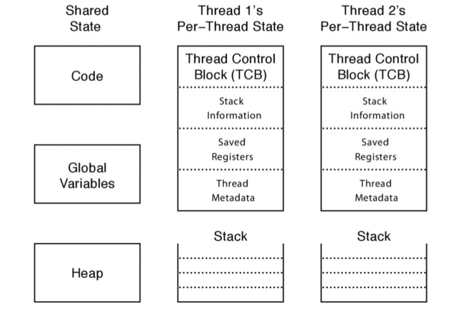
Shared State o Estado Compartido
De forma contraria al per-thread state se debe guardar cierta información que es compartida por varios Threads:
- El Código
- Variables Globales
- Variables del Heap
Estados de un Thread
Los estados de un Thread son:
-
Init: Un thread se encuentra en estado INIT mientras se está inicializando el estado per-thread y se está reservando el espacio de memoria necesario para estas estructuras. Una vez que esto se ha realizado el estado del thread se setea en READY. Además se lo pone en una lista llamada ready list en la cual están esperando todos los thread listos para ser ejecutados en el procesador.
-
Ready: Un thread en este estado está listo para ser ejecutado pero no está siendo ejecutado en ese instante. La TCB esta en la ready list y los valores de los registros está en la TCB. En cualquier momento el thread scheduler puede transicionarlo al estado RUNNING.
- Running: Un thread en este estado está siendo ejecutado en este mismo instante por el procesador. En este mismo instante los valores de los registros están en el procesador. En este estado un RUNNING THREAD puede pasar a READY de dos formas:
- El scheduler puede pasar un thread de su estado RUNNING a READY mediante el desalojo o preemption del mismo mediante el guardado de los valores de los registros y cambiando el thread que se está ejecutando por el próximo de la lista.
- Voluntariamente un thread puede solicitar abandonar la ejecución mediante la utilización de thread_yield, por ejemplo.
-
Waiting: En este estado el Thread está esperando que algún determinado evento suceda. Dado que un thread en WAITING no puede pasar a RUNNING directamente, estos thread se almacenan en la lista llamada waiting list. Una vez que el evento ocurre el scheduler se encarga de pasar el thread del estado WAITING a RUNNING, moviendo la TCB desde el waiting list a la ready list.
- Finished: Un thread que se encuentra en estado FINISHED nunca más podrá volver a ser ejecutado. Existe una lista llamada finnished list en la que se encuentran las TCB de los threads que han terminado.
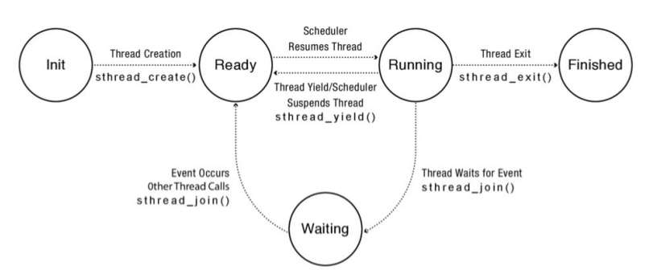
Sincronización
La programación multihilo exiende el modelo secuencial de programación de un único hilo de ejecución. En este modelo se pueden encontrar dos escenarios posibles:
-
Un programa está compuesto por un conjunto de threads independientes que operan sobre un conjunto de datos que están completamente separados entre sí y son independientes.
-
Un programa está compuesto por un conjunto de threads que trabajan en forma cooperativa sobre un set de memoria y datos que son compartidos.
Ambos escenarios son completamente distintos y tienen distintas formas de tratamiento. El segundo caso, en el cual existe datos que son compartidos entre los distintos threads merece una atención en particular. Este tipo de programa es mucho mas complejo de construir que los programas del modelo o caso 1.
En un programa que utiliza un modelo de programación de threads cooperativo, la forma de pensar secuencial no sirve:
- La ejecución del programa depende de la forma en que los threads se intercalan en su ejecución, esto influye en los accesos a la memoria de recursos compartidos.
- La ejecución de un programa puede no ser determinística. Diferentes corridas pueden producir distintos resultados, por ejemplo debido a decisiones del scheduler. Qué pasa con el debugging?
- Los compiladores y el procesador físico pueden reordenar las intrucciones. Los compiladores modernos pueden reordenar las instrucciones para mejorar la performance del programa que se está ejecutando, este reordenamiento es generalmente invisible a los ojos de un solo thread …
Teniendo en cuenta lo anterior, la programación multithreading puede incorporar bugs que se caracterizan por ser:
- sutiles
- no determinísticos
- no reproducibles
El approach a seguir en estos casos es: (1) estructurar el programa para que resulte fácil el razonamiento concurrente y (2) utilizar un conjunto de primitivas estándares para sincronizar el acceso a los recursos compartidos.
Desafios
Race Conditions
Una race condition se da cuando el resultado de un programa depende en como se intercalaron las operaciones de los threads que se ejecutan dentro de ese proceso. De hecho los threads juegan una carrera entre cuando se ejecutan sus operaciones , y el resultado del programa depende de quién gane.
- Ejemplo 1:
Thread A Thread B
x=1; x=2;
¿Cual será el valor de x? Eso depende de quien pierde y quien gana.
- Ejemplo 2:
Sea y=12, ¿Cual será el valor de las variables?
Thread A Thread B
x=y+1; y= y * 2;
Si gana A, entonce x vale 13 y si gana B entonces x=25
- Ejemplo 3: Sea x=0, ¿Cual será el valor de las variables?
Thread A Thread B
x = x + 1; x = x + 2;
Un resultado posible es que x=3 con lo cual el interleave debe haber sido :
load x,r1
add r2,r1,1
store x,r2
load r1,x
add r2,r1,2
store x,r2
En este caso tenemos que x=3
Pero si la intercalación se dió de otra forma ….
load r1,x
load r1,x
add r2,r1,1
add r2,r1,2
store x,r2
store x,r2
En ese caso el valor de X eeeeeee…….. 2
Pero si la intercalación se dió de otra forma ….
load r1,x
load r1,x
add r2,r1,1
add r2,r1,2
store x,r2
store x,r2
En ese caso el valor de X eeeeeee……..1
Aunque el programa sea de dos líneas el análisis de las race condition y el intercalado de ejecución es COMPLEJO
Operaciones Atómicas
En el ejemplo anterior se desensambló y se ejecuto el programa en assembler con operaciones atómicas, este tipo de operaciones no pueden dividirse en otras y se garantiza la ejecución de la misma sin tener que intercalar ejecucion.
Ojo en una arquitectura de 32 bit load y store de una palabra son atómicas, en otras arquitecturas eso no sucede por ejemplo en 64 bits
El problema de la Heladera Llena
¿Es posible coordinar el acceso a los recursos compartidos? A continuación se plantea un problema simplificado. Imaginarse que dos personas comparten su departamento y tienen una única heladera. Como son amigos ambos compañeros verifican que nunca falte leche en la heladera. Con esa responsabilidad un escenario posible seria:
poner imagen dahling 5.1.3
La idea es modelizar a cada compañero con un thread y al número de botellas en la heladera con una variable en memoria. Si se supone que los loads y stores son operaciones atómicas. Existe una solución para este problema que garantice:
- Seguridad o safety (nada malo va a pasar): el programa nunca termina en un estado incorrecto –> nunca más de una persona compra leche
- Liveness (si algo va a pasar tiene que ser bueno): el programa eventualmente siempre está en un estado correto –> si se necesita leche, eventualmente alguien irá a comprarla
Nota: para simplificar se supone que no hay reorganizacion de codigo por parte del compilador.
La idea principal es que cada compañero deje una nota antes de irse a comprar. La forma más sencilla para hacer esto usando threads es utilizando una variable compartida entre ambos threads.
Solución 1
if ( leche ==0 ) { //si no hay leche
if (nota==0) { //si no hay nota
nota=1; //dejar nota
HayLeche++; //comprar leche
nota=0; //sacar nota
}
}
Esta parece ser la solución ideal. Supongamos que el intercalado de ejecución cae así:
if ( leche ==0 ) {
if ( leche ==0 ) {
if (nota==0) {
nota=1;
leche++;
nota=0;
}
}
if (nota==0) {
nota=1;
leche++;
nota=0;
}
}
En el caso anterior se obtendrá 2 botellas de leche. Esta solución es aún peor. Se ha creado una Heisenbug es un error no determinístico que sucede solo cuando se alinean ciertos planeta, el nombre se puso en honor al físico Heisenberg. Este tipo de error desaparece cuando uno quiere debuggearlo ya que depende de condiciones como el del intercalado del scheduler. En contraste estan los bugs detterminísticos llamados Bohr Bugs, en honor a Niels Bohr …
Solución 2
A buscar otra solución. En la solución propuesta anteriormente, el compañero de habitación verifica la nota antes de dejarla. Esto deja abierta la posibilidad que el otro compañero haya ya tomado la decisión de comprar lecha antes de notificar a su amigo esta decisión. ¿Entonces? Si se prueba usar dos notas …
Camino A Camino B
notaA=1; // dejar nota notaB=1; // dejar nota
if(notaB==0){ //esperar hasta nota A2 if(notaA==0){ // si no hay nota B1
if(leche==0 ){ //si no hay leche A3 if(leche==0) { //si no hay leche B2
leche++; // leche++; //comprar leche B3
} } // B4
} } // B5
notaA=0; //Sacar la nota de A notaB=0; //sacar nota de b
Test a realizar:
- ¿Es la solución segura? Para realizar este tipo de chequeo se hace lo mismo que para demostrar si un numero es primo o no. En este caso se supone que la solución no es segura entonces ambos compañeros A y B compran leche. Considerar el estado de las dos variables (NotaB y milk) cuando el thread A está en la linea A1 , en el preciso momento en que el atomic load de notaB desde la memoria compartida al registro A existen 3 posibles escenarios:
- Caso 1: (notaB=1, leche=cualquier valor): esto contradice la suposición de que el thread A compra leche y llega a A3.
- Caso 2: (notaB=0, leche>0): En este programa leche>0 es una propiedad estable ya que si llega a 1 está siempre queda en 1. Entonces si leche >0 cuando A llega a A1 el teset de A2 va a fallar, nadie compra leche contradiciendo las suposiciones.
- Caso 3: (notaB=0; lecha = 0 ): en este caso sabemos –> no se ejecutan B1-B5; además nota A = 1 y leche >0 esto quiere decir que B no va a comprar leche.
Partiendo de la suposición que ambos compran leche, los ejemplos anteriores contradicen esta suposición por ende el algoritmo es seguro (El programa nunca termina en un estado incorrecto). Ahora es tiempo de chequear si es liveness: Lamentablemente no cumple con este requerimiento, ya que es posible para ambos threads pueden setear sus propia notas, y ademas cada thread puede chequear el estado del otro y decidir que nadie compra leche.
Solución 3
La solución anterior era safe, es decir, siempre un thread estaba en un estado correcto. Pero no era liveness, si algo iba a pasar tenía que ser bien, y se ve como el resultado de la ejecución puede caer en que nadie compra leche. A continuación se intentará subsanar esto, en esta solución cada thread determina si el otro thread compró o no leche:
notaA=1; // dejar nota notaB=1; // dejar nota
while(notaB==1){ //esperar hasta nota A2 if(notaA==0){ // si no hay nota B1
; if(leche==0) { //si no hay leche B2
} leche++; //comprar leche B3
if(leche==0 ){ //si no hay leche }
leche++; //comprar leche }
} notaB=0; //sacar nota de b
notaA=0; //Sacar la nota de A
Esta version es safe por los mismos motivos que la solución anterior. Para mostrar que es liveness notar que el codigo de B no tiene loop y ademas si notaB== 0 será por toda la ejecución.
Discución
-
Con los supuestos que se utilizaron el último algoritmo garantiza que la solución sea safe y life
-
La solución solo anda para dos compañeros, la versión generalizada se denomina algoritmo de Peterson:
El algoritmo de Peterson, también conocido como solución de Peterson, es un algoritmo de programación concurrente para exclusión mutua, que permite a dos o más procesos o hilos de ejecución compartir un recurso sin conflictos, utilizando sólo memoria compartida para la comunicación.
-
La solución es compleja.
-
La solución es ineficiente ya que se está usando la técnica llamada busy-waiting, en general debe ser evitada porque consume mucho tiempo de sin estar haciendo nada. Por lo tanto en los sistemas operativos actuales donde existe el concepto de preemption, el thread vueltero va a estar haciendo que otros threads sean re-planificados.
-
Si el compilador reordena instrucciones no anda tampoco.
Locks
Un forma menos compleja de alcanzar una solución para el problema de la heladera es mediante la utilización de locks. Un lock es una variable que permite la sincronización mediante la exclusión mutua, cuando un thread tiene el candado o lock ningún otro puede tenerlo.
La idea principal es que un proceso asocia un lock a determinados estados o partes de código y requiere que el thread posea el lock para entrar en ese estado. Con esto se logra que sólo un thread acceda a un recurso compartido a la vez.
Esto permite la exclusión mutua, todo lo que se ejecuta en la región de código en la cual un thread tiene un lock, garantiza la atomicidad de las operaciones.
API de locks
La idea sobre la utilización de un lock es la siguiente: el lock debe proporcionar un área en la cual cualquier conjunto de intrucciones que se ejecutan en ese área debe garantizar la atomicidad. Operaciones:
-
Un lock tiene dos estados: BUSY o FREE
-
Un lock inicialmente siempre inicia en estado FREE
- Un lock utiliza la primitiva obtener() para pedir acceso al lock o dicho de otra forma a la región de exclusión mutua.
- Si el estado del lock es FREE entonces automáticamente el estado del lock pasa a BUSY.
- Chequear y setear el estado del lock son operaciones atómicas .
- Si un thread adquiere acceso a la región compartida mediante el lock, todos los demás thread chequean si el lock queda libre y esperan a que esto suceda.
- Un lock utiliza la primitiva dejar(), la cual pone en estado FREE al lock y si hubiera otro thread esperando para entrar en la zona de exclusión mutua lo deja entrar. Ejemplo en una especie de pseudo-código:
obtener(lock);
if ( leche ==0 ) {
leche++;
}
dejar(lock);
Locks y Pthreads
Probablemente despues de la creación y terminación de threads, las funciones más útiles son las que se refieren a la creación de un área de exclusión mutua de la sección crítica a través del uso de locks.
int pthread_mutex_lock (pthread_mutex_t * mutex);
int pthread_mutex_unlock (pthread_mutex_t *mutex);
Las rutinas son bastantes intuitivas, donde uno se imagina que puede haber una sección crítica, y por ende debe ser protegida, se utilizan los locks para ello. Por ejemplo:
pthread_mutex_t lock;
rc=pthread_mutex_init(&lock,NULL);
assert(rc==0);
pthread_mutex_lock(&lock);
x=x+1;
pthread_mutex_unlock(&lock);
Existen otras dos funciones interesantes sobre los locks que son :
int pthread_mutex_trylock(pthread_mutex_t * mutex);
trylock devuelve error si el lock solicitado está todavia captado.
int pthread_mutex_timedlock(pthread_mutex_t * mutex, struct timespec *abb_timeout);
timedout adquiere el lock devuelve despues de un timeout o en forma normal, lo que ocurra antes.
Algunas Propiedades Formales
Un lock debe asegurar :
-
Exclusión mutua: como mucho un solo Threads posee el lock a la vez.
-
Progress: Si nadie posee el lock, y alguien lo quiere … alguno debe poder obtenerlo.
-
Bounded waiting: Si T quiere acceder al lock y existen varios threads en la misma situación, los demas tienen una cantidad finita de posible accesos antes que T lo haga.
La Sección Crítica es aquella sección del código fuente que se necesita que se ejecute en forma atómica. Para ello esta sección se encierra dentro de un lock.
Es muy importantre notar que en la actualidad los procesadores están fabricados de forma tal que varios Núcleos o Cores comparten ciertos recursos como por ejemplo memoria cache.
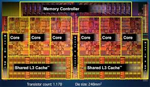
Condition Variables o monitores
En ciertas ocasiones puede ser necesario que un thread espere que cierta condición o estado se de para que este continue su ejecución, por ejemplo un servidor web necesita esperar a que alguien le avise que hay una nueva petición web. Ahora mandarlo a esperar girando ( spinning) en su propio lugar no es eficiente.
Las variable condition permiten a un Threads esperar a por otro Threads para tomar una acción. Son un objeto sincronizado que permiten de forma eficiente esperar por un cambio para compartir algún estado que está protegido por un lock. Tiene tres métodos:
-
wait( Lock *lock): esta llamada suelta el lock en forma atómica y suspende la ejecución del Thread que lo llama poniendo al Thread llamador en la lista de la condition variable. Una vez que el que el thread llamador es despertado, este obtiene el lock antes de volver del wait.
-
signal(): toma a un thread de la lista de espera de la condition variable y lo marca como potencialmente seleccionable para correr, lo pone en la ready list.
-
broadcast: este toma a todos los threads de la lista y los marca como seleccionables para correr.
Ojo no confundir signal y wait con UNIX.
Una condition variable se utiliza cuando algún tipo de señal tiene que suceder entre los threads, por ejemplo esperar por un cambio en un estado compartido o variable compartida, por ende un lock siempre debe proteger la actualización de dicho estado. Las condition variables o también llamados monitores están diseñadas para trabajar en concordancia con los lock.
Los monitores están pensados para ser usados en entornos multiproceso o multihilo, y por lo tanto muchos procesos o threads pueden llamar a la vez a un procedimiento del monitor.
Los monitores garantizan que en cualquier momento, a lo sumo un thread puede estar ejecutando dentro de un monitor. Ejecutar dentro de un monitor significa que sólo un thread estará en estado de ejecución mientras dura la llamada a un procedimiento del monitor. El problema de que dos threads ejecuten un mismo procedimiento dentro del monitor es que se pueden dar condiciones de carrera, perjudicando el resultado de los cálculos.
Existen dos rutinas principales:
int pthread_cond_wait(pthread_con_t * cond, pthread_mutex_t *mutex);
Esta rutina pone al thread a dormir, y entonces espera una señal de algún otro thread :
pthread_mutex_t lock = PTHREAD_MUTEX_INITIALIZER;
pthread_cond_t cond = PTHREAD_COND_INITIALIZER;
pthread_mutex_lock(&lock);
while (ready == 0)
Pthread_cond_wait(&cond, &lock);
Pthread_mutex_unlock(&lock);
En este caso el thread chequea si la variable ready tiene un determinado valor, si no es así el thread llama a pthread_cond_wait y se ira a dormir hasta que alguien cambie ese valor:
Pthread_mutex_lock(&lock);
ready = 1;
Pthread_cond_signal(&cond);
Pthread_mutex_unlock(&lock);
Para evitar esto y garantizar la integridad de los datos privados, el monitor hace cumplir la exclusión mutua implícitamente, de modo que sólo un procedimiento esté siendo ejecutado a la vez. De esta forma, si un thread llama a un procedimiento mientras otro thread está dentro del monitor, se bloqueará y esperará en la cola de entrada hasta que el monitor quede nuevamente libre. Aunque se la llama cola de entrada, no debería suponerse ninguna política de encolado.
Suponer que se tienen dos threads, en el cual puede decirse que existe una relación padre-hijo, es decir el padre necesita esperar que el hijo termine para seguir ejecutándose. La primer solución que puede tenerse en cuenta es la siguiente :
void *child(void *arg) {
printf("child\n");
// XXX how to indicate we are done?
return NULL;
}
int main(int argc, char *argv[]) {
printf("parent: begin\n");
pthread_t c;
pthread_create(&c, NULL, child, NULL); // create child
// XXX how to wait for child?
printf("parent: end\n");
return 0;
}
Inicialmente lo que puede plantearse es la utilización de un flag para indicar cuando se realizó o alcanzó cierto estado del lado del “hijo” y del lado del “padre” ponerlo a dormir o a esperar haciendo nada.
volatile int done = 0;
void *child(void *arg) {
int i,j=0;
printf("child\n");
for(i = 0; i < 1e9; i++ ) j++;
printf("child done! \n");
done = 1;
return NULL;
}
int main(int argc, char *argv[]) {
printf("parent: begin\n");
pthread_t c;
Pthread_create(&c, NULL, child, NULL); // create child
while (done == 0)
; // spin
printf("parent: end\n");
return 0;
}
En todos los lenguajes existe una operacion llamada hacer nada en x86 es:
| 8086/88 | NOP | 0x90 | No operation | No operación | opcode (0x90) equivalente a XCHG AX, A |
La intrucción XCHG equivale a Exchange Data, y en este caso es entre el mismo registro:
Performs a bitwise NOT operation (each 1 is set to 0, and each 0 is set to 1) on the destination operand and stores the result in the destination operand location. The destination operand can be a register or a memory location. This instruction can be used with a LOCK prefix to allow the instruction to be executed atomically.
Esto quiere decir que gasta su tiempo.
La versión que debería ser la óptima sería aquella que eliminen el spin mediante la utilización de Condition Variables:
int done = 0;
pthread_mutex_t m = PTHREAD_MUTEX_INITIALIZER;
pthread_cond_t c = PTHREAD_COND_INITIALIZER;
void thr_exit() {
Pthread_mutex_lock(&m);
done = 1;
Pthread_cond_signal(&c);
Pthread_mutex_unlock(&m);
}
void *child(void *arg) {
printf("child\n");
thr_exit();
return NULL;
}
void thr_join() {
Pthread_mutex_lock(&m);
while (done == 0)
Pthread_cond_wait(&c, &m);
Pthread_mutex_unlock(&m);
}
int main(int argc, char *argv[]) {
printf("parent: begin\n");
pthread_t p;
Pthread_create(&p, NULL, child, NULL);
thr_join();
printf("parent: end\n");
return 0;
}
- Mostrar pruebas de código. usar-> glances
Para que resulten útiles en un entorno de concurrencia, los monitores deben incluir algún tipo de forma de sincronización. Por ejemplo, supóngase un thread que está dentro del monitor y necesita que se cumpla una condición para poder continuar la ejecución. En ese caso, se debe contar con un mecanismo de bloqueo del thread, a la vez que se debe liberar el monitor para ser usado por otro hilo. Más tarde, cuando la condición permita al thread bloqueado continuar ejecutando, debe poder ingresar en el monitor en el mismo lugar donde fue suspendido. Para esto los monitores poseen variables de condición que son accesibles sólo desde adentro.
Las variables de condición indican eventos, y no poseen ningún valor. Si un thread tiene que esperar que ocurra un evento, se dice espera por (o en) la variable de condición correspondiente. Si otro thread provoca un evento, simplemente utiliza la función cond_signal con esa condición como parámetro. De este modo, cada variable de condición tiene una cola asociada para los threads que están esperando que ocurra el evento correspondiente. Las colas se ubican en el sector de datos privados visto anteriormente.
La política de inserción de procesos en las colas de las variables condición es la FIFO, ya que asegura que ningún proceso caiga en la espera indefinida, cosa que sí ocurre con la política LIFO (puede que los procesos de la base de la pila nunca sean despertados) o con una política en la que se desbloquea a un proceso aleatorio.
Tipos de Datos Sincronizados
Estos tipos de datos son de extremada necesidad cuando se trabaja en un entorno concurrente. A continuación se verá un simple ejemplo extraido del libro de arpaci-Dusseau: Contador concurrente.
Contador
typedef struct __counter_t {
int value;
} counter_t;
void init(counter_t *c) {
c->value = 0;
}
void increment(counter_t *c) {
c->value++;
}
void decrement(counter_t *c) {
c->value--;
}
int get(counter_t *c) {
return c->value;
}
Vesion concurrente implementada en el Arpaci:
typedef struct __counter_t {
int value;
pthread_mutex_t lock;
} counter_t;
void init(counter_t *c) {
c->value = 0;
Pthread_mutex_init(&c->lock, NULL);
}
void increment(counter_t *c) {
Pthread_mutex_lock(&c->lock);
c->value++;
Pthread_mutex_unlock(&c->lock);
}
void decrement(counter_t *c) {
Pthread_mutex_lock(&c->lock);
c->value--;
Pthread_mutex_unlock(&c->lock);
}
int get(counter_t *c) {
Pthread_mutex_lock(&c->lock);
int rc = c->value;
Pthread_mutex_unlock(&c->lock);
return rc;
}
Ejecución con varios Threads
Lo interesante de esto es ver andando el código en ejemplos. Contador sincronizado en ejecución.
main: begin
one: begin
Thread: A tiempo: 0.053998
one: end
two threads: begin
Thread: B tiempo: 0.08146
Thread: A tiempo: 0.08192
two: end
four threads: begin
Thread: B tiempo: 0.188230
Thread: C tiempo: 0.194137
Thread: A tiempo: 0.195386
Thread: D tiempo: 0.191596
four: end
main: end
Ejecución con 10 Threads
main: begin
many: begin
trhead:0 valor:1000000 tiempo:0.907249
trhead:1 valor:1000000 tiempo:0.908199
trhead:2 valor:1000000 tiempo:0.889099
trhead:3 valor:1000000 tiempo:0.862051
trhead:4 valor:1000000 tiempo:0.848064
trhead:5 valor:1000000 tiempo:0.479268
trhead:6 valor:1000000 tiempo:0.822782
trhead:7 valor:1000000 tiempo:0.963887
trhead:8 valor:1000000 tiempo:0.912914
trhead:9 valor:1000000 tiempo:0.889592
trhead:10 valor:1000000 tiempo:0.913679
trhead:11 valor:1000000 tiempo:0.903589
trhead:12 valor:1000000 tiempo:0.885815
trhead:13 valor:1000000 tiempo:0.763798
trhead:14 valor:1000000 tiempo:0.758133
trhead:15 valor:1000000 tiempo:0.798242
trhead:16 valor:1000000 tiempo:0.794308
trhead:17 valor:1000000 tiempo:0.809781
trhead:18 valor:1000000 tiempo:0.792817
trhead:19 valor:1000000 tiempo:0.652983
many: end
main: end
Ejecución de 10 threads lanzados con delay random
main: begin
many: begin
trhead:0 valor:1000000 tiempo:0.919642
trhead:1 valor:1000000 tiempo:0.929590
trhead:2 valor:1000000 tiempo:0.894692
trhead:3 valor:1000000 tiempo:0.910276
trhead:4 valor:1000000 tiempo:0.834632
trhead:5 valor:1000000 tiempo:0.957582
trhead:6 valor:1000000 tiempo:0.936412
trhead:7 valor:1000000 tiempo:0.900315
trhead:8 valor:1000000 tiempo:0.882874
trhead:9 valor:1000000 tiempo:0.868671
trhead:10 valor:1000000 tiempo:0.932273
trhead:11 valor:1000000 tiempo:0.895924
trhead:12 valor:1000000 tiempo:0.770965
trhead:13 valor:1000000 tiempo:0.886907
trhead:14 valor:1000000 tiempo:0.839873
trhead:15 valor:1000000 tiempo:0.926874
trhead:16 valor:1000000 tiempo:0.931862
trhead:17 valor:1000000 tiempo:0.888590
trhead:18 valor:1000000 tiempo:0.955091
trhead:19 valor:1000000 tiempo:0.879105
many: end
Errores comunes de concurrencia
Caracterizar errores en programación concurrente es complejo, exite un trabajo escrito por los autores: Shan Lu, Soyeon Park, Eunsoo Seo, and Yuanyuan Zhou, publicado en el año 2008, llamado: Learning from mistakes: a comprehensive study on real world concurrency bug characteristics en el cual se estudiaron los errores mas comunes encontrados en software Open-Source que hacen uso intensivo de programación concurrente.
En este estudio se definen dos tipos de errores:
- Non-deadlock Bugs
- Deadlock Bugs
Non-Deadlock Bugs
Existen dos marcados errores que no están relacionados con deadlock:
-
Atomicity violation: “el deseo de la serialización entre múltiples accesos a memoria es violado” Lu et al.
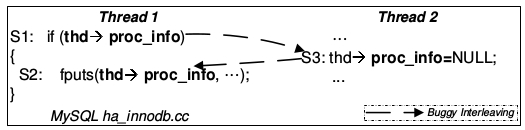
-
Order Violation: “El orden deseado entre accesos a memoria se ha cambiado” Lu et al.
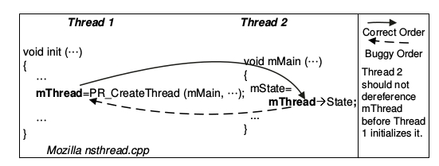
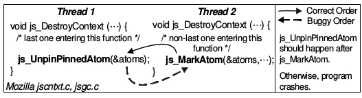
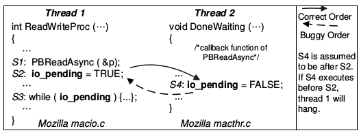
DeadLock Bugs
¿Qué es un deadlock? En concurrencia el concepto de dead lock aparece cuando entre dos o más threads uno obtiene el lock y por algún motivo nunca libera el mismo haciendo que sus compañeros se bloqueen.
Thread 1:
pthread_mutex_lock(L1);
pthread_mutex_lock(L2);
Thread 2:
pthread_mutex_lock(L2);
pthread_mutex_lock(L1);
El código anterior puede generar un deadlock. ¿Por qué puede? Porque depende del entrelazado de ejecución … cuando eso ocurre hay un deadlock.
Condiciones para que se de un DeadLock
Según Coffman, E. G., Elphick, M., & Shoshani, A. (1971). System deadlocks. ACM Computing Surveys (CSUR), 3(2), 67-78. existen cuatro condiciones para que se de un deadlock:
- Exclusión mutua: los thread reclama control exclusivo sobre un recurso compartido que necesitan.
- Hold-and-Wait: un thread mantiene un recurso reservado para sí mismo mientras espera que se de alguna condición.
- No preemption: los recursos adquiridos no pueden ser desalojados (preempted) por la fuerza.
- Circular wait: existe una conjunto de threads que de forma circular cada uno reserva uno o mas recursos que son requeridos por el siguiente en la cadena.
Cómo Prevenir
- Circular Wait: se previene escribiendo codigo que nunca induzca a esperas circulares, por ejemplo con el establecimiento de un orden total, este orden asegurará que no se caiga en espera circular.
- Holds-and-wait: la forma de prevenir el hold and wait es haciendo que los lock se tomen en forma atómica:
pthread_mutex_lock(prevention); // begin lock acquistion pthread_mutex_lock(L1); pthread_mutex_lock(L2); ... pthread_mutex_unlock(prevention); // end - Evitar la exclusión mutua…